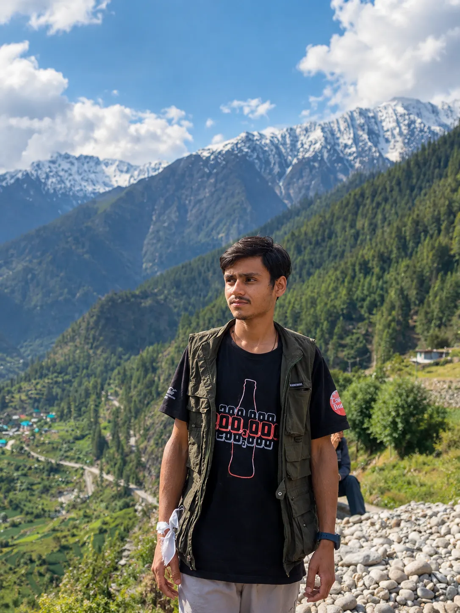

Born in the Himalayas. Built Around Community.
From Jari, in the Kullu Valley: a home stay and Uttarkunth Productions — early steps toward communities shaping their own development.
“Is there any practical solution to these problems — and who will create it?”
A question asked while preparing for government examinations, while watching the Himalayan region change.
Learn by doing. Grow by serving.
Communities are not only recipients of development. They can be participants, organisers, entrepreneurs and problem-solvers — when people come together and take responsibility.
That is why Uttarkunth starts with enterprise, not charity. The ventures earn, learn and build capability. A defined share of that strength is intended for practical community initiatives. They are the vehicle, not the destination.
Five ideas we build around.
Unity
People together become a force.Ordinary people, working as one, can do what waiting never does.
Action
Do the meaningful work.Act quickly, but with planning, safety and responsibility.
Experience
Learn by building.A café, a stay, a film — each is a lesson, including the failures.
Capability
Skills and livelihoods that stay.What is learned and earned becomes the strength to serve.
Development
Communities shape their own.The destination, and still a long way ahead.
An honest beginning.
Now
- Yash Home Stay
- Uttarkunth Café
- Uttarkunth Productions on YouTube
Learning
How to run hospitality, food and storytelling well — and how to document the journey honestly, including what does not work.
Ahead
Ambitions, not promises: more ventures chosen carefully, small community projects, and models other villages could adapt.

“My aim is not to claim that I already know the answer. My aim is to build, experiment, learn, document and improve.”
If a small village can become a place where people create businesses, protect what they value and solve small problems together, perhaps that experience can become a model for something larger.
Gaurav Negi · FounderThe mountains are where it began. Not where it ends.
Come and be part of what comes next.
Prefer email? info@uttarkunth.com